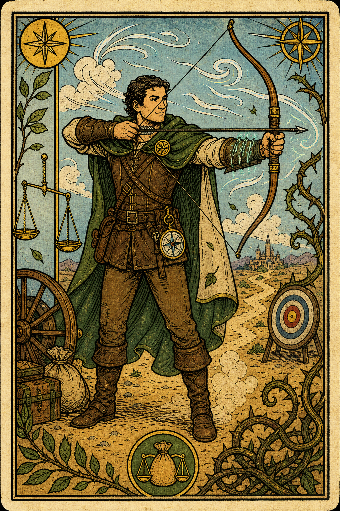

Austin
Human / Ranger (Hunter) / Level 5
Edit OverviewEdit
Edit AbilitiesEdit
Edit CombatEdit
Weapon Attacks
Edit Combat StatsEdit
Edit HealthEdit
Edit AbilitiesEdit
Saving Throws
Skills
Edit EquipmentEdit
Hunter's Prey (Colossus Slayer)
Once per turn when hitting a creature below max HP, deal an extra 1d8 damage.
Archery Fighting Style
+2 bonus on attack rolls with ranged weapons.
Zephyr Strike
Move like the wind. For the duration, movement doesn't provoke opportunity attacks. Once before the spell ends, can give yourself advantage on one weapon attack roll on your turn. That attack deals an extra 1d8 force damage on a hit. Whether you hit or miss, walking speed increases by 30 feet until end of that turn.
Ensnaring Strike
The next time you hit a creature with a weapon attack before this spell ends, a writhing mass of thorny vines appears at the point of impact, and the target must succeed on a Strength saving throw or be restrained by the magical vines until the spell ends. A Large or larger creature has advantage on this saving throw. If the target succeeds on the save, the vines shrivel away. While restrained by this spell, the target takes 1d6 piercing damage at the start of each of its turns. A creature restrained by the vines or one that can touch the creature can use its action to make a Strength check against your spell save DC. On a success, the target is freed.
Cure Wounds
1 creature is healed for 1d8+1d8/SL+spellcasting ability modifier hp.
Piercing Shot
3/day. Before making an attack roll, you can activate Piercing Shot and target a specific body part. If the attack hits, the target suffers a debilitating injury. The creature suffers disadvantage on Wisdom (Perception) checks relying on sight and on attack/damage rolls. The creature can no longer hold two-handed weapons and can only hold a single object at a time. Arm/Hand: Movement speed is halved. Foot/Leg: The creature must make a Constitution saving throw when attempting the next action in combat (DC = 10 + attacker's proficiency + Dexterity modifier). On a failed save, they lose their action and reactions until the start of your next turn.
Precise Aim
1/day. At the start of your turn, activate Precise Aim to focus your attacks. Until the end of your next turn, whenever you hit a creature, allies gain advantage on attack rolls against that target.
Primeval Awareness
Ensnaring strike, Zephyr strike, Cure wounds
Limited Features
- Piercing Shot: 3 uses
- Precise Aim: 1 use
Proficiencies
- Common language from Human
- Common language from Ranger: Beasts
- Common language from Human
- Common language from Guild Merchant: Goblin